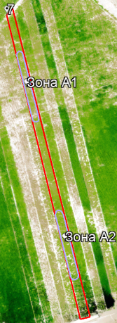
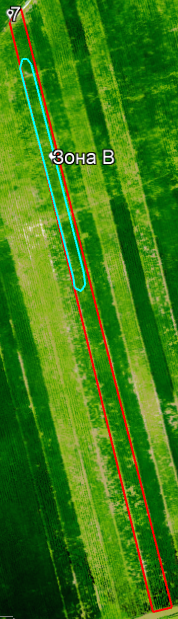
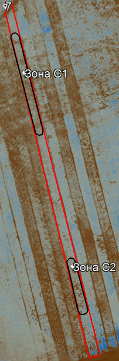

Дата съемки дроном: 15 июля 2022 года
Оценка текущей ситуации
Тип культуры: соя.
Сорт: Unumli (Унумли), средне-скороспелый
Площадь поля: 0,11 Га
Фаза вегетации: R1-R3, R4 (цветение, образование бобов)
| Однолетнее | Многолетнее | Деревья | |
|---|---|---|---|
| Этап вегетации | посадка | ||
| прорастание | всходы | сокодвижение | |
| набухание почек - начало бутонизации | набухание почек - начало бутонизации | набухание почек - начало бутонизации | |
| бутонизация | бутонизация | бутонизация | |
| начало цветения | начало цветения | начало цветения | |
| массовое цветение | массовое цветение | массовое цветение | |
| начало плодоношения | начало плодоношения | начало плодоношения | |
| массовое плодоношение - конец вегетации | массовое плодоношение - конец вегетации | массовое плодоношение - конец вегетации | |
| сбор урожая | сбор урожая | сбор урожая |
1. Состояние посевов Значения вегетационных индексов показывают, что состояние посевов на делянке плохое. Посевы находятся в сильном угнетении, не развиваются, значительно отстают росте и состоянии от фенологической фазы, в которой они должны находиться.
| Состояние посевов | Балл, оценка |
|---|---|
| 5-отлично | |
| 4-хорошо | |
| 3-удовлетворительно | |
| 2-плохо | |
| 1-очень плохо |
2. В северной части поля (Рис.8) культура не развивается, и местами погибла, проблемная площадь составляет около 0,038 Га или 37% от площади поля (Зона А1,А2). Причина должна быть выяснена специалистом на месте.
3. Остальная часть посевов недоразвиты, площадь листовой поверхности незначительная и не соответствует фазе развития растения.
4. В северной части поля (Рис.9) на площади 0,02 Га или 21% от площади поля наблюдается дефицит азота 15-20% от нормы (Зона В).
5. По всей площади поля наблюдается дефицит калия до 20% от нормы.
6. В северной части поля (Рис.10) на площади 0,031 Га или 30% от площади поля (Зона С1, С2) присутствуют зоны с пониженным содержанием влаги, что говорит о том, что посевы сильно обезвожены и, возможно, погибли.
7. Состояние посевов не соответствует фенологической фазе, в которой они должны находиться.
8. Посевы были заражены болезнью, сильно угнетены и ослаблены.
|  |  |  |
Рекомендации:
1. До сбора урожая не проводить мероприятий по внесению калия, фосфора, азота и средств по борьбе с сорняками.
2. После сбора урожая провести мониторинг поля для составления карты дифференцированного внесения удобрений для подготовки почвы к следующему посеву.
3. Осенью после сбора урожая необходимо внести до 50% от нормы азотных удобрений.
4. Весной обогатить почву серой путем внесения сульфата аммония.
5. Возможная дата сбора урожая: 19-21 августа